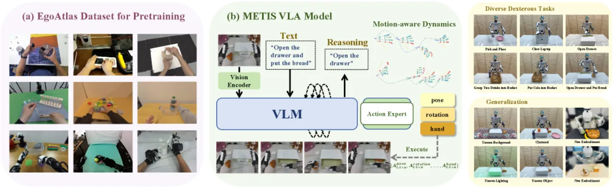
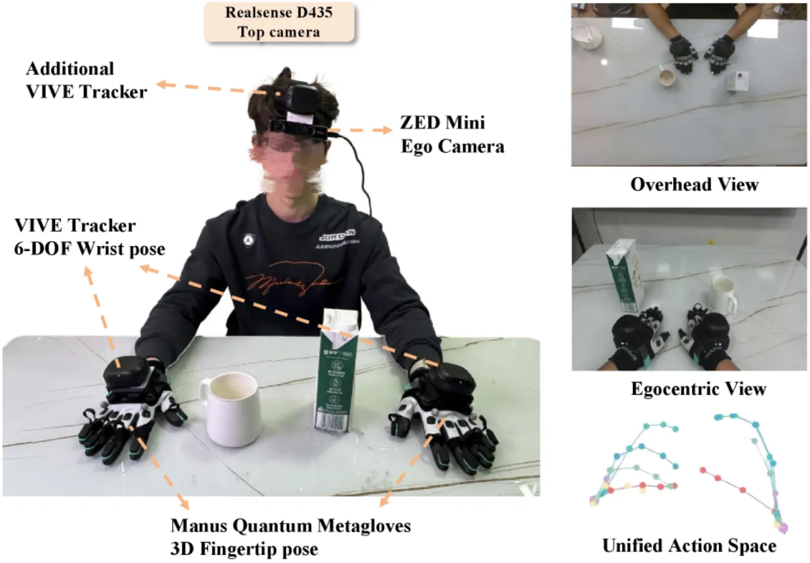
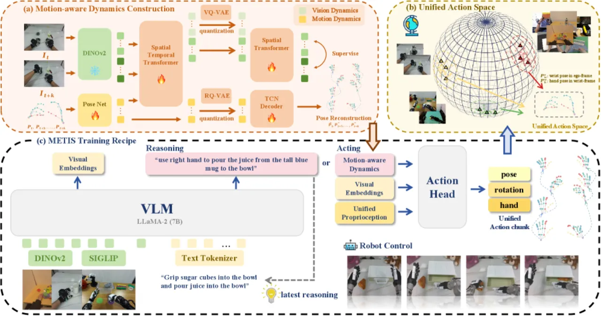
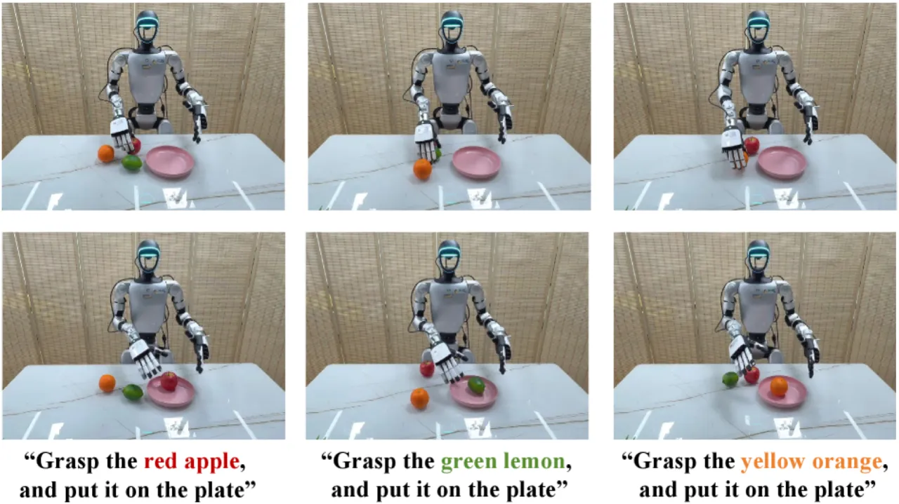
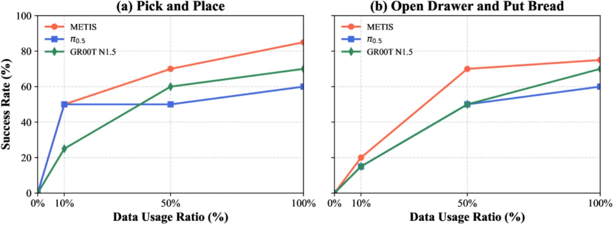
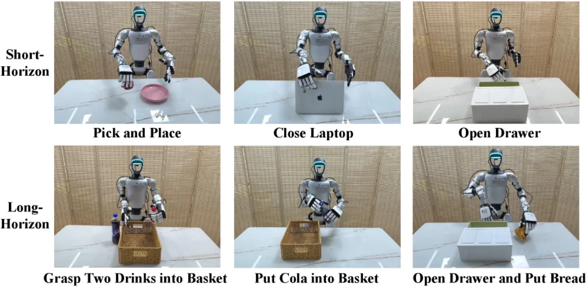

METIS 提出了一套面向灵巧手机器人操作的 Vision-Language-Action (VLA) 训练框架。其核心是 EgoAtlas——一个融合 8 个来源、343K 条轨迹、89.72M 图像-动作对的大规模多源自视角数据集；以及 motion-aware dynamics——一种将视觉动态与手部运动动态联合离散化的紧凑监督信号，有效弥合人类与机器人动作之间的分布差距。
灵巧手操作是迈向通用机器人的关键一步，但大规模带动作标注的灵巧操作数据极为稀缺。人类手部动作数据虽然规模庞大、场景多样，却存在视觉外观与机器人差距大、数据格式不统一等挑战，导致现有 VLA 模型难以直接利用。
"The bottleneck of scarce large-scale action-annotated dexterous manipulation data… Human data offers vast scale and diverse manipulation behaviors, [but] prior work faces limited scenarios and large visual gap between human and robots."

与仅依赖单一机器人数据的方法相比，METIS 的核心洞察是：将人类手部操作数据与机器人遥操作数据在统一动作空间下对齐，能显著提升模型的泛化能力。这一思路类比于大语言模型的预训练范式——先在海量异构数据上学习通用表征，再在下游任务上微调。
METIS 由三个核心组件构成：(a) 紧凑型灵巧操作动态表征（motion-aware dynamics），(b) 基于 EgoAtlas 的统一动作空间预训练，(c) 推理-执行一体化（reasoning-acting integration）的下游部署框架。

EgoAtlas 整合了来自 8 个来源的数据，包括视觉捕捉系统、VR 数据集、遥操作机器人以及作者自采集的可穿戴传感器数据，共 343K 条轨迹、89.72M 图像-动作对。所有来源均映射到统一动作空间（每手 25 个关节关键点 + 6-DoF 腕部位姿），消除了跨源数据格式不一致的障碍。数据以自视角（egocentric）第一人称视角录制，与机器人实际部署时的观测视角保持一致。
为了在有限的序列长度内编码丰富的操作信息，作者提出将操作动态分为两个互补组件：
这种离散化表征既保持了信息密度，又与语言模型的 token 序列建模范式天然兼容，无需额外的连续动作解码头。
METIS 基于 Prismatic-7B VLM 构建，采用混合视觉编码器（SigLIP + DINOv2），在 LLaMA tokenizer 中扩展了特殊 dynamics token。推理阶段通过 chain-of-thought 进行子任务分解，将复杂长时序任务分解为可执行的原子动作序列，再由动作解码分支生成具体的关节控制指令。

实验在 6 个真实世界灵巧操作任务上评估 METIS，涵盖短时序与长时序任务，并测试分布外泛化（unseen backgrounds/lighting/objects）和跨机体迁移能力（22-DoF SharpaWave hands）。每个任务执行 20 次，报告成功率（SR）和阶段成功率（PSR）。
| 任务 | 类型 | METIS 成功率 (SR) | METIS PSR |
|---|---|---|---|
| Pick and Place | 短时序 | 85% | — |
| Close Laptop | 短时序 | 95% | — |
| Open Drawer | 短时序 | 90% | — |
| Grasp Two Drinks into Basket | 长时序 | 75% | — |
| Put Cola into Basket | 长时序 | 70% | 85% |
| Open Drawer and Put Bread | 长时序 | 75% | 82.5% |
| 测试条件 | 成功率 (SR) |
|---|---|
| Unseen background | 70% |
| Unseen lighting | 65% |
| Unseen object | 70% |
| Cluttered environment | 70% |

METIS 在未经专门训练的情况下迁移至 22-DoF SharpaWave 灵巧手，在 Grasp Apple 任务上达到 85% 成功率，在 Tool Use 任务上达到 70% 成功率，验证了统一动作空间的跨机体泛化能力。

消融实验系统验证了各组件的贡献：
| 配置 | Pick & Place (SR) | 长时序任务 (SR) |
|---|---|---|
| 无预训练（from scratch） | 60% | 35% |
| 仅人类数据预训练 | 70% | 60% |
| 完整多源预训练（METIS） | 85% | 75% |
| 移除 motion-aware dynamics | 30% | 0% |
其中最关键的发现是：移除 motion-aware dynamics 后长时序任务成功率骤降至 0%，说明运动动态表征是支撑复杂灵巧操作的核心组件，而非可选附件。

"Model relies solely on egocentric observations, which may restrict ability to perceive complete object geometry and fine interaction details."——第一人称视角存在自遮挡问题，对需要精确感知物体形状（如透明容器、不规则形状物体）的任务构成挑战。
"Pretraining process currently excludes large-scale third-person data available online."——互联网上存在大量人类操作的第三人称视角视频（如 YouTube cooking/crafting），这部分数据未被 EgoAtlas 利用，是未来工作的重要扩展方向。
（inferred from design）六个评估任务均为桌面固定基座灵巧操作，尚未验证 METIS 在移动机械臂或双臂协同等更复杂场景下的表现。